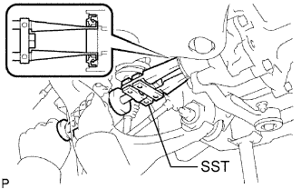
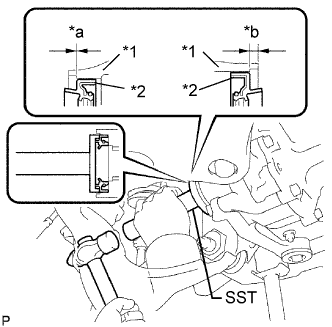

FRONT DIFFERENTIAL SIDE GEAR SHAFT OIL SEAL > REPLACEMENT |
| 1. REMOVE FRONT DRIVE SHAFT ASSEMBLY LH |
Remove the front drive shaft assembly LH (Click here).
| 2. REMOVE FRONT DRIVE SHAFT ASSEMBLY RH |
| 3. REMOVE DIFFERENTIAL SIDE GEAR SHAFT OIL SEAL |
|  |
Using SST, tap out the 2 oil seals.
| 4. INSTALL DIFFERENTIAL SIDE GEAR SHAFT OIL SEAL |
Apply MP grease to the lip of 2 new oil seals.
|  |
Using SST and a hammer, tap in the 2 oil seals.
| Item | Specified Condition |
| LH Side | -0.45 to 0.45 mm (-0.0177 to 0.0177 in.) |
| RH Side | 4.8 to 5.8 mm (0.189 to 0.228 in.) |
| *1 | Differential |
| *2 | Seal |
| *a | LH side |
| *b | RH side |
| 5. INSTALL FRONT DRIVE SHAFT ASSEMBLY LH |
Install the front drive shaft assembly LH (Click here).
| 6. INSTALL FRONT DRIVE SHAFT ASSEMBLY RH |